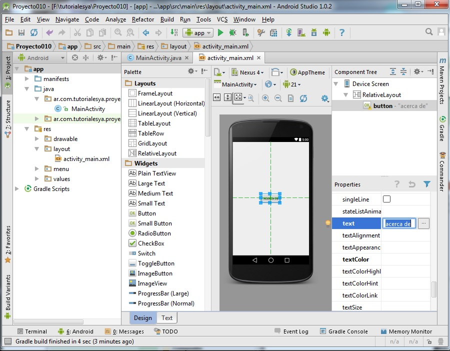
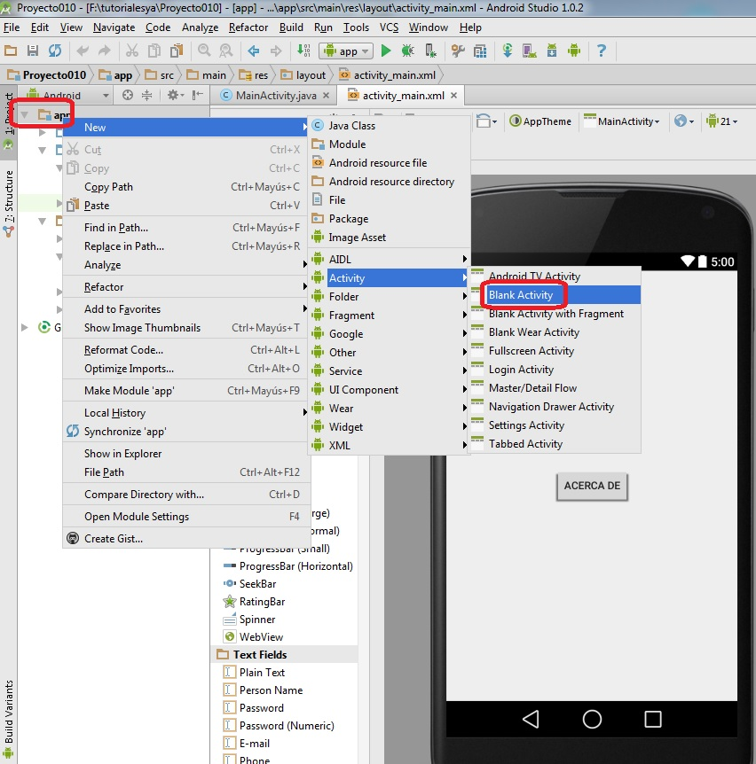
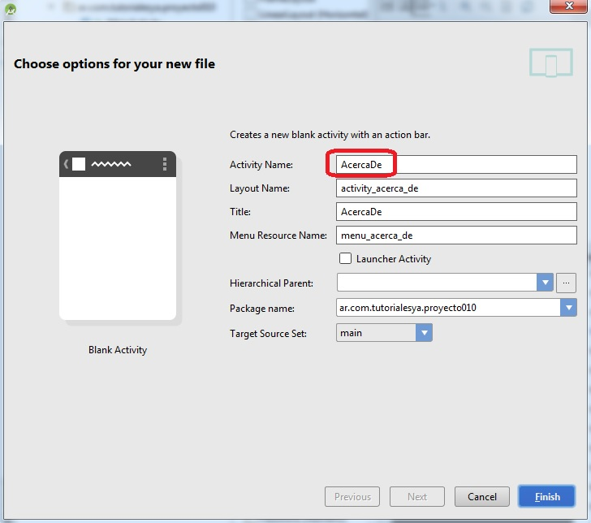
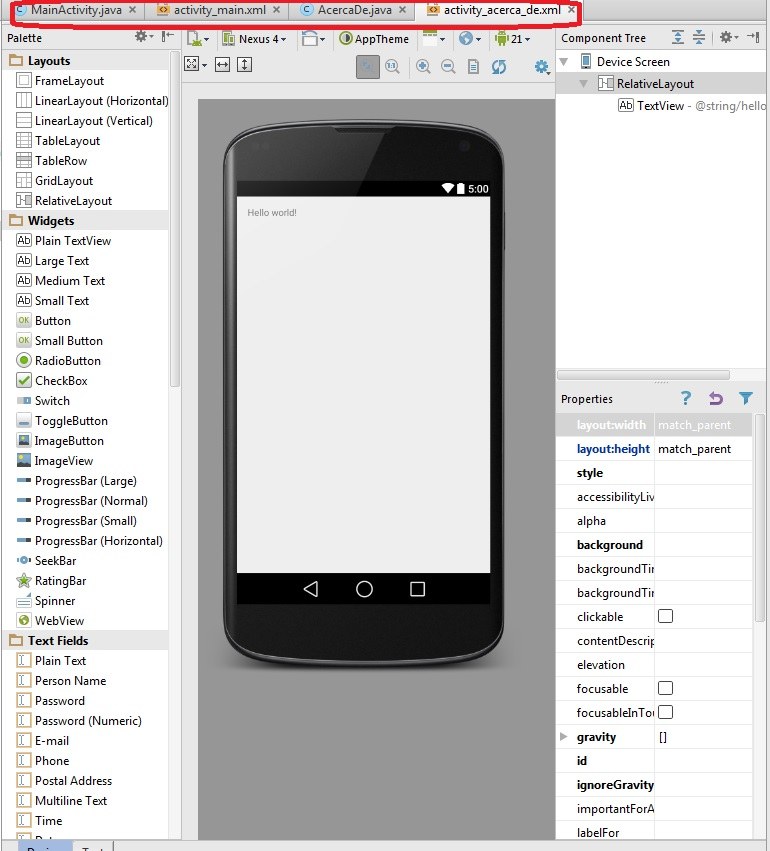
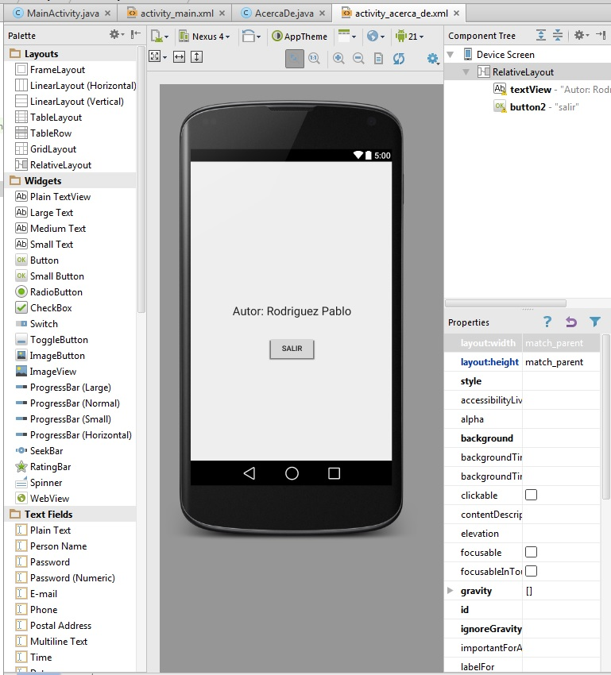
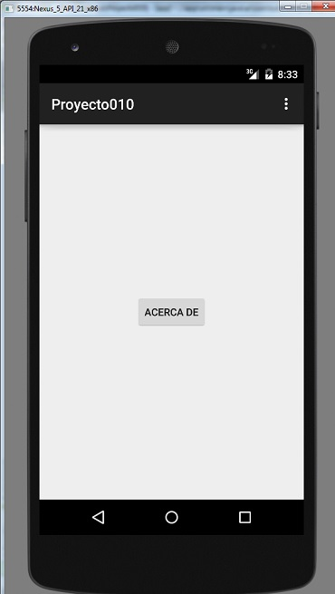
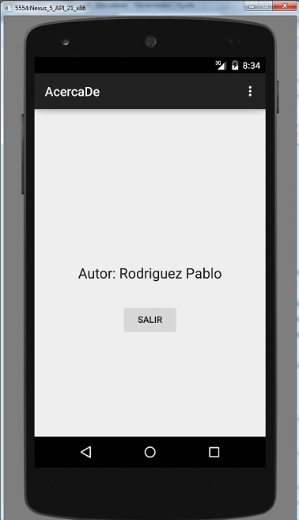

11 - Lanzar un segundo "Activity" |
Hasta ahora todos los programas han tenido una sola ventana (Activity)
Es muy común que una aplicación tenga más de una ventana. Para implementar esto en Android debemos plantear otros dos archivos uno xml con la interfaz y otro java con la lógica (tengamos en cuenta que cuando utilizamos Android Studio automáticamente cuando creamos un proyecto nos crea el archivo XML y el código java del primer Activity)
Vamos a ver en este concepto los pasos que debemos dar para crear otro Activity y como activarlo desde el Activity principal.
Confeccionar un programa que muestre en la ventana principal un botón que al ser presionado muestre otra ventana (Activity) mostrando un TextView con el nombre del programador de la aplicación y un botón para cerrar la ventana o actividad y que vuelva al primer Activity.
1 - Primero creamos un nuevo proyecto que lo llamaremos Proyecto010 y en la ventana principal creamos la siguiente interfaz:
Es decir que nosotros queremos que cuando se presione el botón "ACERCA DE" nos abra otra ventana (Activity) y nos muestre el nombre del programador y un botón para cerrar dicha ventana.
2 - Ahora tenemos que crear el segundo Activity. Para esto hacemos clic con el botón derecho del mouse en la ventana de Project donde dice "app" y seleccionamos New -> Activity -> Blank Activity

Aparece un diálogo donde debemos definir el nombre del Activity "Activity Name" y le asignaremos como nombre "AcercaDe" (se crearán dos archivos AcercaDe.java y activity_acerca_de.xml):
Ya tenemos los cuatro archivos necesarios para implementar la aplicación:
Los dos primeros que se crean cuando iniciamos el proyecto:
activity_main.xml MainActivity.java
Y estos dos nuevos archivos para la segundo ventana:
activity_acerca_de.xml AcercaDe.java
Implementamos la interfaz visual del segundo Activity es decir del archivo activity_acerca_de.xml con los siguientes controles:
3 - Ahora implementaremos la funcionalidad en la actividad (Activity) principal para que se active la segunda ventana.
Inicializamos la propiedad onClick del objeto de la clase Button con el valor "acercade", este es el método que se ejecutará cuando se presione.
El código fuente de la actividad principal queda:
package ar.com.tutorialesya.proyecto010;
import android.content.Intent;
import android.support.v7.app.ActionBarActivity;
import android.os.Bundle;
import android.view.Menu;
import android.view.MenuItem;
import android.view.View;
public class MainActivity extends ActionBarActivity {
@Override
protected void onCreate(Bundle savedInstanceState) {
super.onCreate(savedInstanceState);
setContentView(R.layout.activity_main);
}
@Override
public boolean onCreateOptionsMenu(Menu menu) {
// Inflate the menu; this adds items to the action bar if it is present.
getMenuInflater().inflate(R.menu.menu_main, menu);
return true;
}
@Override
public boolean onOptionsItemSelected(MenuItem item) {
// Handle action bar item clicks here. The action bar will
// automatically handle clicks on the Home/Up button, so long
// as you specify a parent activity in AndroidManifest.xml.
int id = item.getItemId();
//noinspection SimplifiableIfStatement
if (id == R.id.action_settings) {
return true;
}
return super.onOptionsItemSelected(item);
}
public void acercade(View view) {
Intent i = new Intent(this, AcercaDe.class );
startActivity(i);
}
}
En el método acercade creamos un objeto de la clase Intent y le pasamos como parámetros la referencia del objeto de esta clase (this) y la referencia del otro Activity (AcercaDe.class)
Llamamos posteriormente al método startActivity pasando el objeto de la clase Intent (con esto ya tenemos en pantalla la ventana del segundo Activity):
public void acercade(View view) {
Intent i = new Intent(this, AcercaDe.class );
startActivity(i);
}
Si ejecutamos el programa podemos ver que cuando presionamos el botón "Acerca De" aparece la segunda ventana donde se muestra el TextView con el valor "Autor : Rodriguez Pablo" y un botón con el texto "salir" (si presionamos este botón no sucede nada, esto debido a que no hemos asociado ningún evento a dicho botón)
4 - Debemos codificar el evento onClick de la segunda actividad. Seleccionemos el botón "salir" y definamos en la propiedad onClick el nombre de método que se ejecutará al presionarse el botón (en nuestro caso lo llamaremos "salir") :
El código fuente de la actividad AcercaDe queda:
package ar.com.tutorialesya.proyecto010;
import android.support.v7.app.ActionBarActivity;
import android.os.Bundle;
import android.view.Menu;
import android.view.MenuItem;
import android.view.View;
public class AcercaDe extends ActionBarActivity {
@Override
protected void onCreate(Bundle savedInstanceState) {
super.onCreate(savedInstanceState);
setContentView(R.layout.activity_acerca_de);
}
@Override
public boolean onCreateOptionsMenu(Menu menu) {
// Inflate the menu; this adds items to the action bar if it is present.
getMenuInflater().inflate(R.menu.menu_acerca_de, menu);
return true;
}
@Override
public boolean onOptionsItemSelected(MenuItem item) {
// Handle action bar item clicks here. The action bar will
// automatically handle clicks on the Home/Up button, so long
// as you specify a parent activity in AndroidManifest.xml.
int id = item.getItemId();
//noinspection SimplifiableIfStatement
if (id == R.id.action_settings) {
return true;
}
return super.onOptionsItemSelected(item);
}
public void salir(View v) {
finish();
}
}
Cuando se presiona el botón salir se ejecuta el método "salir" llamando al método finish() que tiene por objetivo liberar el espacio de memoria de esta actividad y pedir que se active la actividad anterior.
Ahora nuestro programa está funcionando completamente:
Primer Activity:
Segundo Activity:
Este proyecto lo puede descargar en un zip desde este enlace: proyecto010.zip
Este proyecto lo puede descargar en un zip desde este enlace: proyecto011.zip